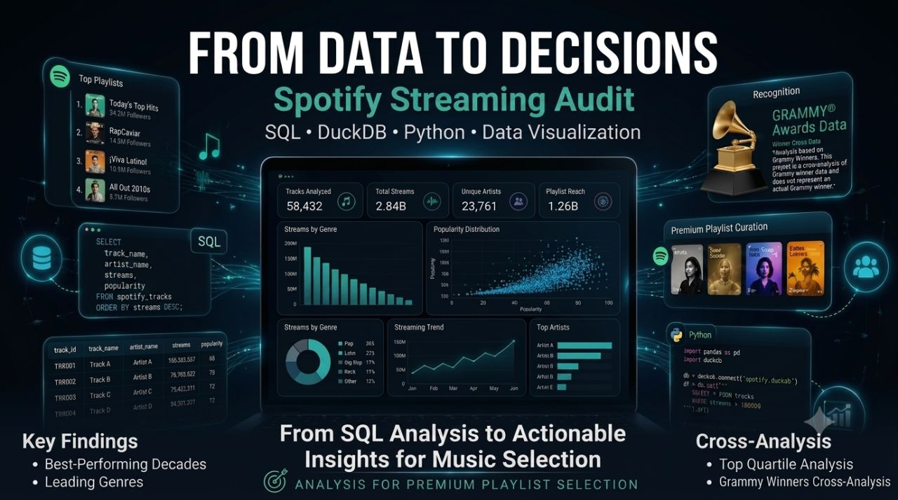

Music Streaming Analytics
Spotify Streaming Audit
Data-driven analysis of Spotify tracks to identify high-performing songs and build a recommendation framework for premium playlist curation.
SQL
Python
Machine Learning
Business Intelligence